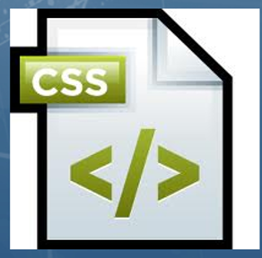

სტილების კასკადური ცხრილი CSS (Cascading Style Sheets) წარმოადგენს ვებ გვერდის დიაზინის აწყობის ყველაზე გავრცელებულ, მარტივ და მოსახერხებელ ტექნოლოგიას.
CSS-ის საშუალებით შესაძლებელია ნებისმიერი ვებ გვერდის გალამაზება, დიზაინის მოხერხებული სტილების შექმნა.
CSS ტექნოლოგიის მხარდაჭერა დღეს-დღეისობით აქვს ყველა თანამედროვე ბრაუზერს, ამიტომაც ვებ სივრცეში თითქმის არ არსებობს ვებ გვერდი, რომელიც არ იყენებს აღნიშნულ ტექნოლოგიას.
ვიდრე CSS ტექნოლოგიის სწავლას გადაწყვეტთ, მანამდე საჭიროა კარგად გაეცნოთ საიტების აგების საფუძვლებს HTML ტექნოლოგიას.
გადასვლა უკან